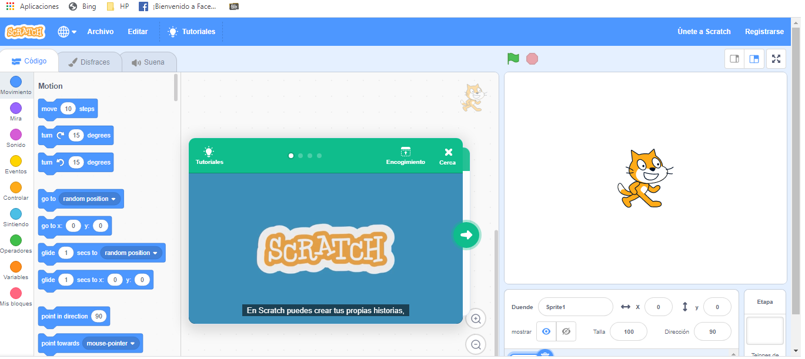

En el marco de este proyecto se van a desarrollar unas estratégias pedagógicas utilizando el
programa Scratch.
y qué es... ?
Scratch es un entorno de programación desarrollado por un grupo de investigadores del
Lifelong
Kindergarten del Laboratorio de Medios del MIT, bajo la dirección y liderazgo del Dr. Michael Resnick.
Aunque éste es un proyecto de código abierto, su desarrollo es cerrado pero el código fuente se ofrece de
manera libre y gratuita.
Su entorno de trabajo es:

El entorno permite implementar propuestas didácticas para distintas áreas tales como matemática, arte y
animación, música y robótica. Está disponible para la comunidad de usuarios un repositorio virtual para
compartir las producciones.
Scratch es una herramienta que ofrece un contexto y un conjunto de oportunidades para contribuir con el
Pensamiento Computacional (PC), las actividades de aprendizaje están basadas en diseño (en particular, la
programación de medios interactivos), apoyando el desarrollo de este pensamiento en los jóvenes (Espino, E.
E. E., Soledad, C., and González, C. S. G. (2015).
En nuestro país, Colombia, la Fundación Gabriel Piedrahita Uribe de Cali en convenio con la
Universidad
ICESI, desde el año 2012, promueven el evento "Scratch Day", que busca unirse a la celebración del Día
Mundial de Scratch que se realiza en más de 36 países cada año. Este evento está diseñado especialmente para
docentes de básica y media de Colombia, interesados en utilizar el lenguaje de programación Scratch como una
herramienta de enseñanza y aprendizaje en el currículo (Eduteka, n.d.-b).
Aprende a usar Scratch
Tutorial
Proyectos en Scratch
Aprende a programar en Scratch jugando y visitando estos proyectos.
Sinónimos
Instrucciones
Puedes dar clic en la banderilla verde para iniciar. Luego debes usar el teclado para escribir la respuesta.